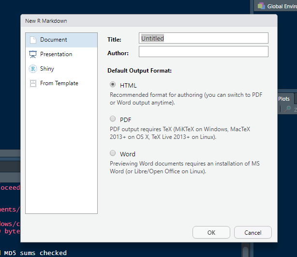
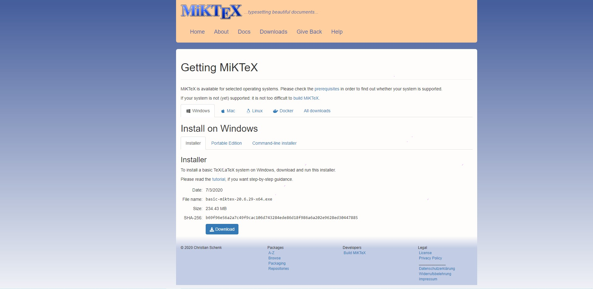
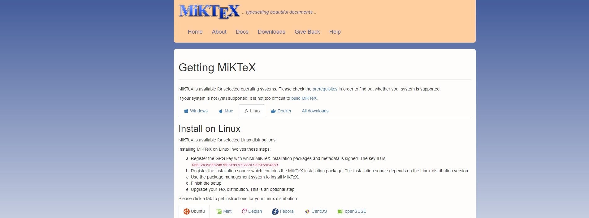
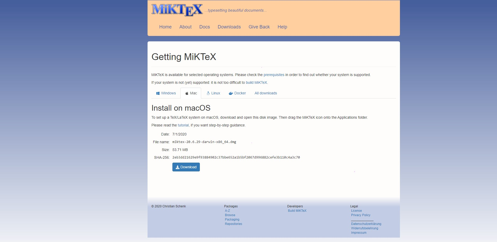

Introdução ao R Markdown
2020-08-18
Capítulo 1 Introdução
Neste curso, iremos aprender a utilizar o R Markdown para gerar documentos.
1.1 O que é
Markdown é uma linguagem de marcação usada para formatar de maneira simples os textos redigidos e converte-los em HTML. John Gruber e Aaron Swartz, os criadores desse sistema, utilizaram marcadores como: #, \* ,! , [] e (). Assim é possível inserir em nossos textos: títulos, listas, formatação de fonte, imagens e tabelas.
R Markdown é um documento criado no R Studio (Ou em outras IDEs) que possibilita empregar os recursos da linguagem markdown citados acima em conjunto com a linguagem R, permitindo a melhor organização de análises, relatórios e códigos em um só documento.
1.2 Possíveis tipos de Outputs
O R Markdown apresenta várias possibilidades de outputs (renderizar) nos formatos de documentos, apresentações, entre outros, sendo que em cada formato há várias opções de customização. Vejamos abaixo os principais:
Documentos:
- html_document – documento no formato HTML;
- pdf_document – documento no formato PDF (via o modelo LaTeX);
- word_document – documento no formato do editor de texto Microsoft Word (docx);
- odt_documento – documento no formato dos editores de texto Libre Office e OpenDocument;
- rtf_documento – documento no formato Rich Text Format (rtf).
Apresentações (slides):
- ioslides_presentation – apresentação no formato HTML com ioslides;
- beamer_presentation – apresentação no formato PDF com LaTeX Beamer;
- powerpoint_presentation – apresentação no formato power point.
Outros:
- flexdashboard::flex_dashboard – apresentação interativa com dashboards;
- htm_vignette – R package vignette no format HTML
- github_document – document no format GitHub
Você pode escolher o output desejado quando for criar um documento conforme a figura 1. Para fazer deve-se clicar em file > new file > R Markdown. Abrirá uma aba e nela há quatro formas de output previamente estabelecidas, a saber: Document (HTML, PDF e Word), Presentation (HTML (ioslides), HTML (slidy), PDF (Beamer) e PowerPoint), Shiny (Shiny Document e Shy Presentation) e From Template (GitHub document e Package Vignette). Escolha uma e clique em OK.
Além disso, você também pode alterar o formato utilizando a função abaixo, sendo que render refere-se ao local que está salvo seu documento e output_format ao tipo de documento desejado, conforme os exemplos apontados no início.
render("teste.Rmd", output_format = "pdf_document")O mesmo pode ser feito para outros formatos.
Abaixo está presente uma lista com todos os formatos suportados por padrão com o pacote rmarkdown.
beamer_presentationcontext_documentgithub_documenthtml_documentioslides_presentationlatex_documentmd_documentodt_documentpdf_documentpowerpoint_presentationrtf_documentslidy_presentationword_document
1.3 Criando o primeiro documento
Para gerar um arquivo em R Markdown é necessário abrir o programa R Studio, e instalar o pacote rmarkdown :
install.packages("rmarkdown")Após a instalação do pacote no R Studio, siga os seguintes passos:

Em seguida, escolha o tipo de arquivo desejado: 
Obs: Para gerar documentos em PDF, é necessário ter instalado em seu computador o programa Latex
Seguindo os passos acima, você terá criado o seu primeiro documento em R Markdown.
Vale ressaltar que é possível utilizar o R Markdown sem que tenha instalado o R Studio, porém, é necessário ter instalado o programa Pandoc
1.4 Download MiKTeX
Para exportar um arquivo PDF utilizando o R Markdown é necessário um motor LaTex pois é ele que irá converter o arquivo .tex em PDF. Então é necessário que tenha instalado em seu computador o programa MiKTeX,. Para fazer o download é só acessar o link: https://miktex.org/download.
1.4.1 Windows
Selecione a aba Windows e clique no botão de download: 
1.4.2 Linux
Selecione a aba Linux em seguida a aba de sua distribuição Linux para receber as instruções de instalação: 
1.4.3 MacOS
Selecione a aba macOS e clique no botão de download: 